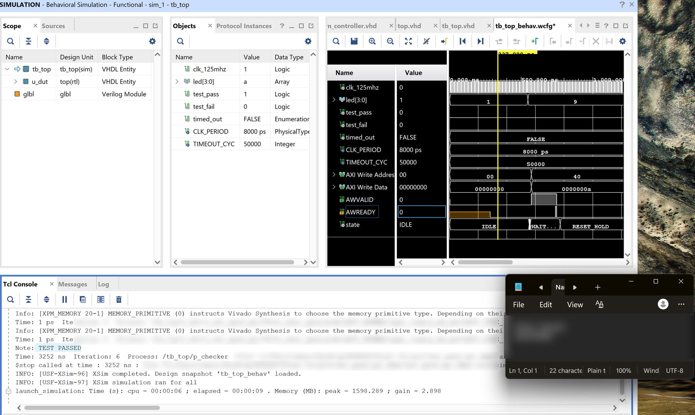

Harness Build & Connector Repair
Wiring work on Matador Motorsports’ Formula SAE car. I worked on the non-essential harness build, wired and verified the knock sensor, and repaired several failing connections on the main harness. Started as a volunteer; now on the Controls subteam and taking on the full harness for this year’s car.


- ECU
- MoTeC M130
- Non-essential
harness - Cut to length,
pinning, connectors,
continuity checks - Main harness
repairs - 34-pin MoTeC
Injector
AEM ignitor - Sensors wired
- Shock pots ×4
Rad-out temp
Knock sensor - Role
- Volunteer →
Controls subteam
Non-essential harness
I worked on the non-essential harness alongside the team rather than building it alone: cutting wires to length, crimping pins, fitting connectors, and checking continuity on the finished circuits before it went on the car.
The sensor circuits I wired were the four shock position potentiometers, the radiator outlet temperature sensor, and the knock sensor. I also replaced the 20-pin dashboard connector after its body was damaged, and re-pinned the circuits into the new one. That connector carries the CAN bus for additional sensors and signals routed through the dash.
Knock sensor
The knock sensor is a three-wire part, but the M130 input takes two. I re-pinned it to the correct two-wire configuration so the ECU would see a usable signal rather than a floating or mis-referenced one.
To verify it, I struck the sensor with a wrench and watched for the response on an oscilloscope. Once the wiring was right, every strike produced a clear signal, which confirmed the sensor was correctly referenced and reaching the ECU.
Main harness repairs
Three connections on the main harness were failing in service, and they shared a cause: no strain relief at the termination, so vibration and handling loads went straight into the crimp instead of being absorbed by the harness.
- 34-pin MoTeC connector. Wires breaking off at the pins. Re-pinned with proper strain relief.
- Injector. The wire broke at the termination. Re-terminated and relieved.
- AEM ignitor. Pinned to the wrong positions and unrelieved. Corrected the pinout and re-terminated.
That is the lesson I took from it. On a vehicle, connections fail at terminations, and they fail mechanically before they fail electrically. Strain relief is not a finishing touch.
This year’s car
I’m taking on both the essential and non-essential harnesses for this year’s car, start to finish, built to motorsport practice:
- Planning the harness and selecting connectors before any wire is cut
- Mil-spec construction throughout
- Concentric twisting for durability and noise rejection
- Correct strain relief at every termination
- Service loops so a repair doesn’t consume the wire’s slack
- Heat shrink and full labeling so the harness can be diagnosed by someone who didn’t build it
Also
Shadowed dyno and tuning sessions using MoTeC software, and worked on engine diagnostics with the team.
Access Control System
A passcode-controlled locking system on a TI TM4C123, written bare-metal in C against the register headers, with no HAL and no RTOS. Six peripheral subsystems brought up from scratch and made to work together. ECE 425L.
- MCU
- TI TM4C123
ARM Cortex-M4 - Sensing
- ADC0 / AIN2
photocell - HMI
- HD44780 LCD
4-bit nibble mode - Actuator
- 28BYJ-48 stepper
via ULN2003 - Language
- C, CMSIS registers
Design decisions
- Hysteresis on the proximity wake. The photocell threshold uses separate assert and release points (1.2 V and 0.7 V) with a state latch, so the display doesn’t chatter when ambient light sits near the boundary.
- Debounce with confirm-and-release. Edge detect, 20 ms settle, re-read to confirm, then block until the button is released, rather than trusting a single sample.
- Timer-gated tone generation. Timer0 in periodic mode at 1 µs ticks sets buzzer frequency, instead of tuning loop counts by ear.
- Modular bring-up. Each peripheral has its own init and control functions so subsystems could be tested in isolation before integration.
Actuation
The stepper runs an eight-state half-step table on PB0–PB3
through a ULN2003 driver, indexed forward for unlock and reversed for lock.
Coils are de-energized at the end of every move so the motor isn’t
holding current, and heating, while idle.
The failure that taught the most
The first build used a servo. Under load the system would freeze and reset, but only when the servo moved. The servo, LCD, and buzzer were all drawing from the microcontroller’s supply, and the inrush when the servo started was pulling the rail below the brown-out threshold.
The fix was architectural rather than incremental: move the actuator to a 28BYJ-48 stepper on its own external supply, taking the motor current off the MCU rail entirely. The resets stopped. Correlating “it only fails when the motor moves” to a power-integrity problem, instead of chasing it as a firmware bug, was the real lesson.
What I’d change
The delay functions are busy-wait loops, which are fragile under compiler optimization and blocking for the whole system. I’d move timing to SysTick and restructure the main loop as a non-blocking state machine, so input stays responsive while the motor runs.
Scope
This was a two-person course project. I did the hardware build and wrote all of the firmware; my partner handled the class presentation.
Driver Display
In progressA TFT driver display on an STM32H745I-DISCO, intended to show MoTeC ECU channels over CAN with the display logic generated from Simulink. The graphics side works; the Simulink integration doesn’t yet.


- Board
- STM32H745I-DISCO
- Display
- TFT LCD
- Graphics
- TouchGFX
- Logic
- Simulink /
Embedded Coder - Data source
- MoTeC ECU over CAN
- Status
- Integration
unresolved
The goal
Put live engine and vehicle channels in front of the driver on a TFT panel, with the display logic authored as a Simulink model and generated to C rather than hand-written, so the team can change what’s shown without rewriting firmware.
What works so far
The graphics side is running. The panel initializes and renders images, and I’ve been working through TouchGFX to learn how the screens are laid out and customized, which is what the finished dash will be built from.
The open problem
Adding the Simulink-generated code produces a blank screen. The board runs, but nothing draws. We haven’t found the cause yet.
What’s useful is that TouchGFX renders correctly on its own, which means the panel, framebuffer, and display controller configuration are all known good. The fault is somewhere in the integration, and these are the things worth checking:
- Whether the generated initialization code re-configures clocks or peripherals that TouchGFX already set up
- Whether the model’s step function is blocking or starving the render task
- Whether the framebuffer overlaps memory the generated code claims
- Whether execution reaches the draw calls at all, or faults before first render
Why it’s here
It’s unfinished, but it’s the work I’m doing right now, and the useful part of an unfinished project is the reasoning rather than the result.
AXI Quad SPI
CourseworkFinal project for ECE 420. Each student picked one of Xilinx’s pre-built hardware blocks, learned the interface protocol used to control it directly from the specification, and demonstrated it working in simulation. I chose the Quad SPI core. Spring 2026.

- Target
- Zybo Z7-10
Zynq-7000 - Interface
- AXI4-Lite
- IP core
- Xilinx AXI Quad SPI
- Tools
- Vivado, VHDL
The assignment
The professor listed a set of Xilinx IP cores, which are ready-made hardware blocks that ship with Vivado, and each student claimed one. The catch was that the control interface wasn’t taught in lecture. You had to read the specification yourself and work out how to drive the core from it, which is how it works in industry. I picked the Quad SPI core after my first choice was taken.
What SPI is
SPI is how two chips on a circuit board talk to each other. One chip leads and the other responds, over four wires: data out, data back, a shared clock so both sides agree on timing, and a select line. It’s used almost everywhere, including sensors, memory chips, and displays.
What the IP core does
Rather than building an SPI controller from scratch, you drop in Xilinx’s. It’s the hardware equivalent of using a library instead of writing the function yourself.
The core has a set of internal settings and mailboxes, each at a numbered address. AXI is the standard way the rest of the chip reads and writes those addresses. Since every Xilinx core uses the same interface, learning it once carries over to all of them.
Testing it without hardware
The core has a loopback mode: a setting that wires its own output back to its
own input. Send a byte out and the same byte comes back. That means you know
the correct answer before running the test. Send 0xA5, expect
0xA5. Anything else is a fault.
The test runs the design in software, feeds it inputs, checks the outputs, and prints a pass or fail rather than making you read waveforms by eye. That’s the result shown above.
Why it was worth doing
The point of the project was working from a protocol specification instead of a tutorial. AXI is the interface nearly every Xilinx IP core uses, so being able to read the spec and make sense of a register map applies to any of them, not just this one.
Background
Education & coursework
Tools & skills
Firmware Bare-metal C on ARM Cortex-M, CAN, I²C, SPI, ADC, timers, PWM, interrupt handling
Hardware Crimp termination and connector pinning, strain relief, continuity checking, soldering, sensor wiring, oscilloscope signal verification
Vehicle systems MoTeC M130 logging and diagnostics; dyno and tuning sessions (shadowed); Formula SAE electrical rules
Digital design VHDL, AXI4-Lite, self-checking testbenches
Software & tools MATLAB, Simulink and Embedded Coder, STM32CubeIDE, TouchGFX, Vivado, KiCad, PSpice, Git